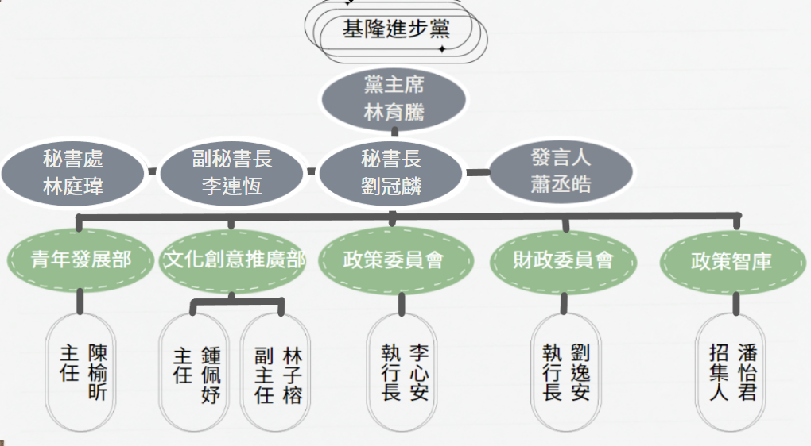

基隆進步黨
Keelung Progressive Party
最新消息
NEWS
關於我們
ABOUT
關於理念
關於黨徽
關於黨章
組織架構
ORG.
聯絡我們
CONTACT US
加入我們
JOIN US
組織架構

組織成員名單
黨主席
林育騰
秘書長
劉冠麟
副秘書長
李連恆
秘書處
林庭瑋
發言人
蕭丞皓
青年發展部
陳榆欣 主任
文化創意推廣部
鍾佩妤 主任
文化創意推廣部
林子榕 副主任
政策委員會
李心安 執行長
財政委員會
劉逸安 執行長
政策智庫
潘怡君 招集人